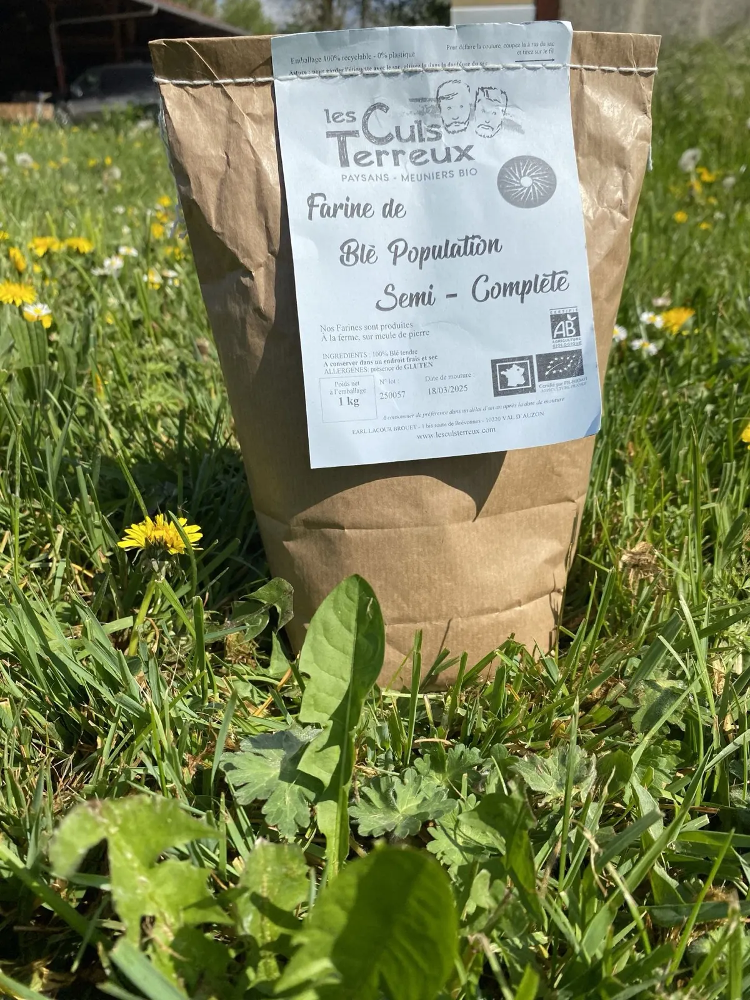
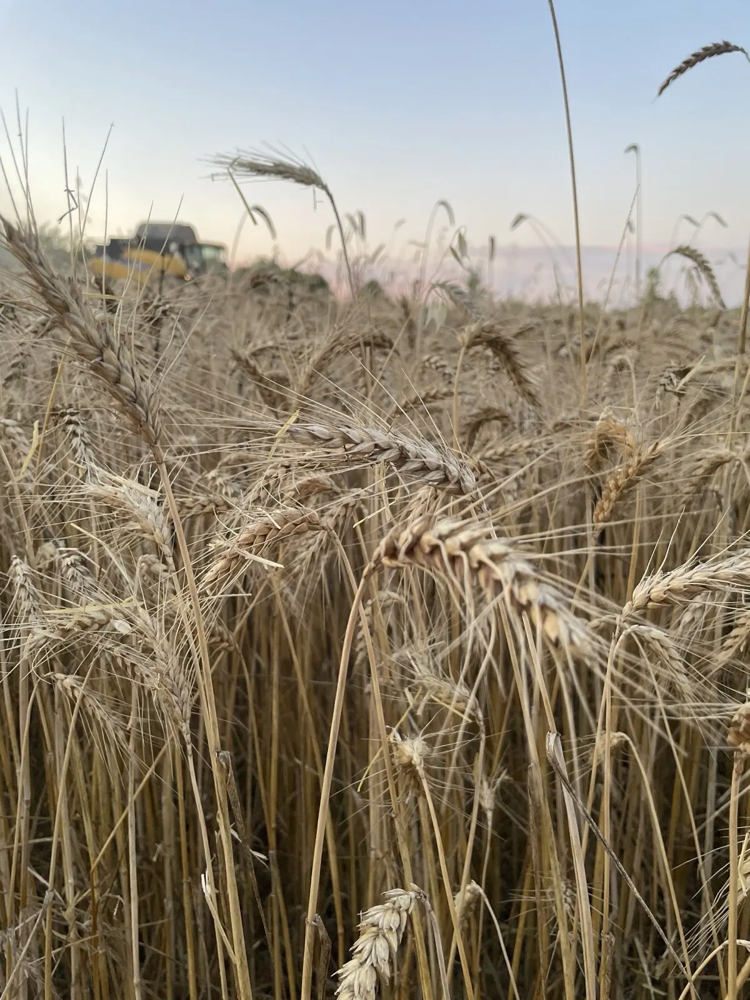
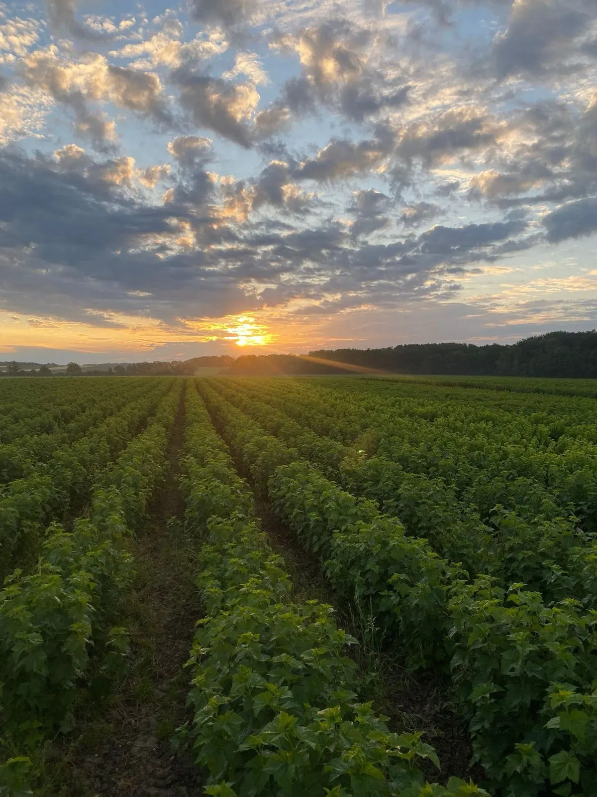
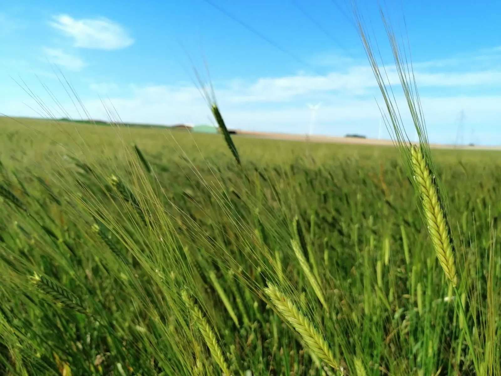
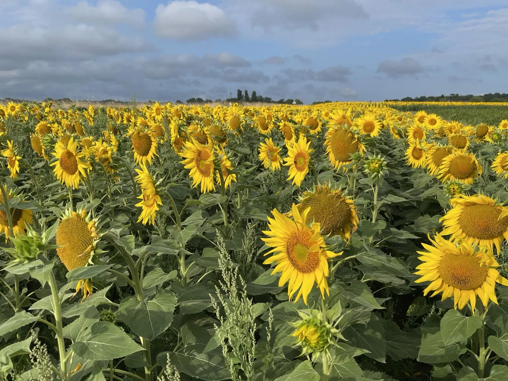
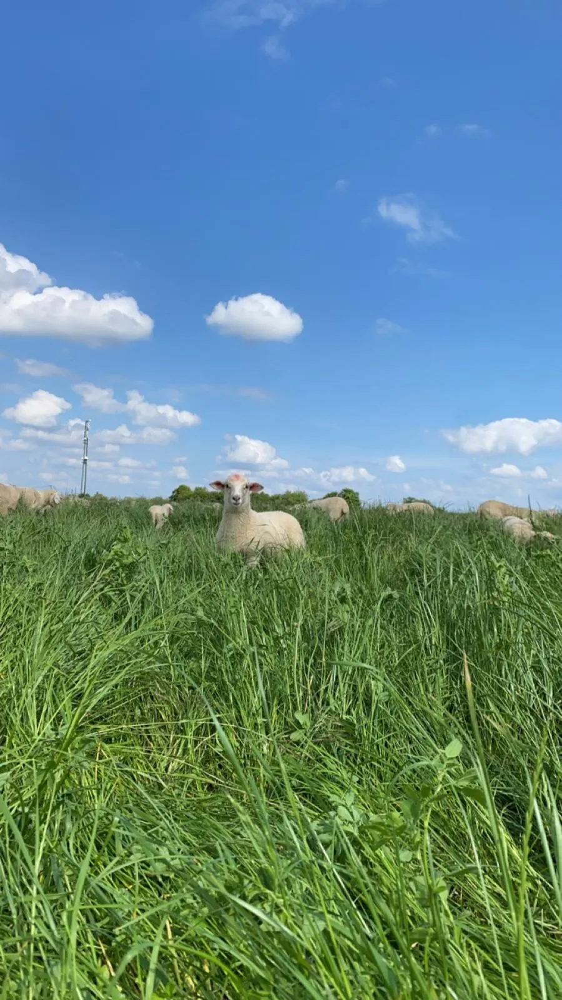
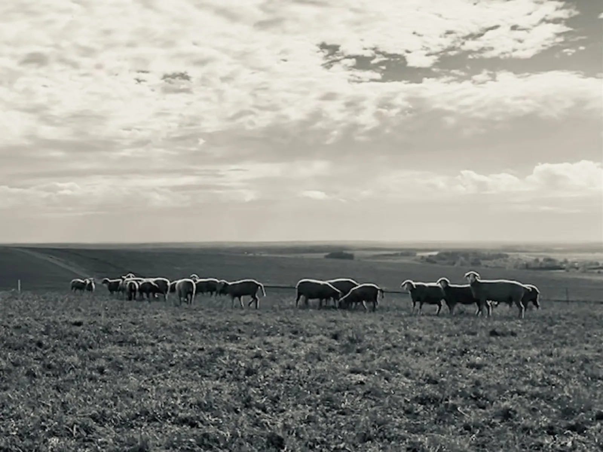

Les Culs-Terreux
Des céréales, des légumineuses et des farines bio, moulues à la ferme sur meule de pierre. Des brebis en plein air intégral, et du cassis pour la parfumerie et la fleuristerie. La ferme a été reprise par Fabien en 2004, à la suite de plusieurs générations.

Blé population, moulu à la ferme
- 130 hade cultures, dont 20 ha de cassis
- 200 brebisEst à laine mérinos, en plein air
- Meule de pierrefarines moulues au fil des commandes
- 1, 5 et 25 kgpour les particuliers et les professionnels

Les champs de la ferme, au couchantUne ferme de famille, entre cultures et brebis
Située à Villehardouin, hameau de Val d'Auzon, dans l'Aube, la ferme a été reprise par Fabien en 2004 à la suite de plusieurs générations. Elle compte 130 hectares de cultures, dont 20 hectares de cassis.
Dans un souci de maintien de la fertilité des sols, la ferme allie cultures et élevage d'ovins en plein air intégral. Vingt pour cent des parcelles sont en prairies temporaires et accueillent les brebis, qui donnent un grand coup de « patte » à la vie du sol.
- 2004Fabien reprend la ferme ; l'atelier bourgeons et feuillages de cassis démarre dès le début.
- 2018Installation du moulin et de l'atelier de triage. Céréales et farines en agriculture biologique.
- 2021Arrivée des brebis, de race Est à laine mérinos.
Du champ au moulin, une production suivie de A à Z
« Blé population », sur nos étiquettes : un mélange de variétés de blé cultivées ensemble et ressemées année après année. Ces blés évoluent avec leur sol, leur climat et nos pratiques, et gagnent en résilience.
Nos semences
Nous sélectionnons, trions et semons nos propres semences fermières, avec les collectifs Graines de Noé et Initiatives Paysannes.
Le moulin
Nos céréales sont triées, stockées et moulues à la ferme au fil des commandes, sur meules de granit, pour garder leurs qualités gustatives et nutritionnelles.
Nos farines
50 % de variétés anciennes, idéales pour le pain au levain, et 50 % de variétés plus modernes comme le Soissons : des farines robustes pour la panification et riches en saveurs.
La rotation
Une rotation sur une dizaine d'années, dont 5 ans de prairie riche de 50 % de légumineuses, qui nourrit les brebis et repose le sol. Nos sacs sont en papier, fermés par un fil cousu.

Épis encore verts
Tournesols en fleurNos produits, cultivés, transformés et ensachés à la ferme
Farines moulues sur meule de pierre
BioBlé semi-complète et complète, seigle, petit épeautre, sarrasin. Moulues au fil des commandes et certifiées en agriculture biologique, en sacs de 1, 5 et 25 kg.
Lentilles vertes et légumineuses
Aussi en vracLentilles vertes, petit épeautre décortiqué, et aussi des pois et des féveroles.
Agneaux et brebis
Plein airEnviron 200 brebis de race Est à laine mérinos, une race rustique qui aime être au grand air.
Couettes et oreillers en laine
Pré-commandeConfectionnés avec la laine de nos brebis, pour des nuits paisibles et durables. Pré-commander une couette ou un oreiller
Bourgeons et feuillages de cassis
20 haLes bourgeons sont récoltés l'hiver, surtout pour la parfumerie ; le feuillage de mai à septembre, pour la fleuristerie. En collaboration, notamment, avec la coopérative Socofruit.
Pain au levain
Sur commandeFait à partir de nos farines par nos partenaires Claire et Hugo, à commander avec la vente du mois.

Est à laine mérinosNos brebis pâturent les prairies temporaires de la rotation.
Vente à la ferme
Le dernier jeudi du mois
de 17h à 19h
1 bis route de Brévonnes, Villehardouin. Paiement en espèces ou par chèque.
- Commandez jusqu'à l'avant-dernier jeudi du mois : farines, lentilles, alimentation animale et pain au levain.
- Venez chercher votre commande le dernier jeudi du mois, à la ferme.
- Sans commande, achetez en vrac le jour du retrait, pour moins de 5 kg.
Sous les halles de Lesmont
Farines, lentilles et petit épeautre décortiqué uniquement.
Le dernier vendredi du mois, de 17h à 20h
Où trouver nos produits
Boutiques
- Biocoop La Source
- Maison Taupin
- La Ferme de la Diligence
- Cocotte et Potager
- La Ferme à Guigui
Boulangeries
- Boulangerie-restaurant « Claire & Hugo »
- Boulangerie et atelier « L'atelier P1 »
- Boulangerie 105 Miettes
Contactez-nous
Une commande, un retrait, une question sur nos farines ou sur la laine : appelez la ferme ou écrivez-nous.

- Appelez-nous
- 06 16 46 52 77
- Emilie, pour les retraits
- 06 87 16 99 65
- Écrivez-nous
- contact.lct10@gmail.com
- La ferme
- 1 bis route de Brévonnes
Villehardouin
10220 Val d'Auzon - Vente à la ferme
- Le dernier jeudi du mois, de 17h à 19h, sur commande.